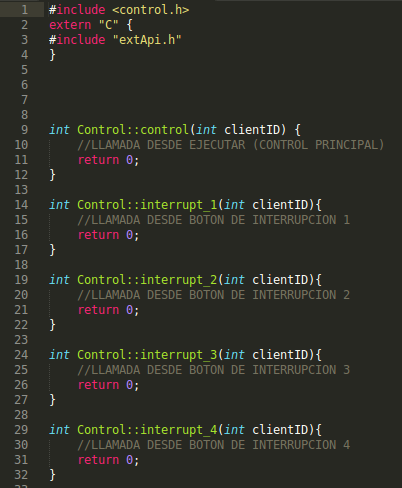

Para una mejor experiencia del usuario han incluido ambos archivos en la distribución, con el contenido mínimo para implementar I_Control, por lo que el usuario solo deberá añadir los atributos y métodos que considere oportunos, ver figura 16.
Figura 16:
Control.cpp por defecto
|
 |
Subsecciones
Daniel Peiró
2014-05-16